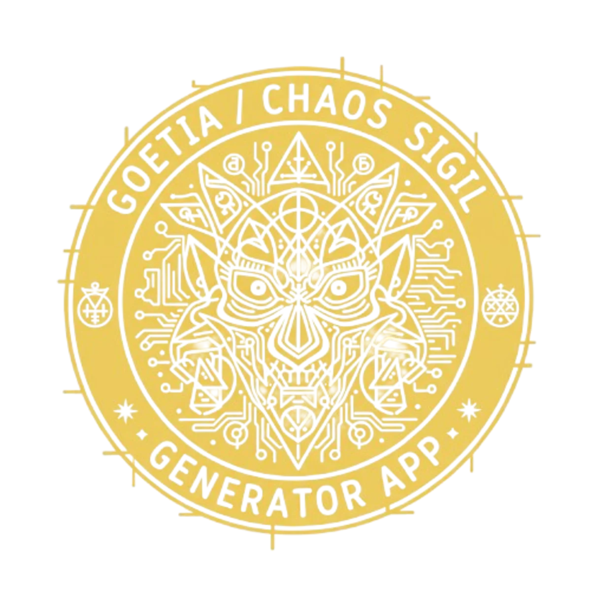

Planetary Magic Squares: Complete Guide for Sigil Creation
What Are Planetary Magic Squares?
Planetary magic squares, also known as kameas, are ancient mathematical grids that have been used in ceremonial magic for centuries. Each square is associated with one of the seven classical planets and consists of a grid of numbers arranged so that every row, column, and main diagonal sums to the same total. These squares are not merely mathematical curiosities — they are powerful tools for sigil creation and talismanic magic.
The Seven Planetary Kameas
Saturn (3x3) — Total: 15
Saturn's square is used for binding, protection, discipline, and restriction. It is the slowest planet, associated with time, karma, and structure. Saturn sigils are excellent for protective wards and breaking harmful patterns.
Jupiter (4x4) — Total: 34
Jupiter's square governs expansion, abundance, success, and authority. Use it for wealth sigils, career advancement, and personal growth. Jupiter is the great benefic in traditional astrology, making its kamea ideal for prosperity magic.
Mars (5x5) — Total: 65
Mars represents energy, courage, conflict, and protection. Its square is used for sigils related to overcoming obstacles, asserting boundaries, and channeling aggressive energy constructively. Mars sigils are potent but require careful handling.
Sun (6x6) — Total: 111
The Sun's square is associated with vitality, leadership, success, and personal power. It is the most balanced planetary kamea, suitable for general empowerment, confidence, and visibility. Solar sigils amplify the practitioner's natural authority.
Venus (7x7) — Total: 175
Venus governs love, beauty, harmony, friendship, and pleasure. Its square is used for attraction sigils, relationship magic, artistic inspiration, and self-love work. Venus sigils carry a gentle but persistent energy.
Mercury (8x8) — Total: 260
Mercury represents communication, intellect, commerce, and travel. Its square is ideal for sigils related to learning, writing, business negotiations, and divination. Mercury sigils enhance mental clarity and persuasive ability.
Moon (9x9) — Total: 369
The Moon's square governs intuition, dreams, emotions, and psychic ability. It is the largest kamea and the most complex. Lunar sigils are used for dream work, astral projection, divination, and emotional healing.
How to Create Sigils with Planetary Kameas
- Define your intention in a clear statement. For example: "I am financially prosperous."
- Select the appropriate planetary kamea based on your intention's purpose. For prosperity, use Jupiter's 4x4 square.
- Convert your intention to numbers by mapping each letter to its position in the alphabet (A=1, B=2... Z=26).
- Reduce multi-digit numbers by adding digits together until you get a number within the kamea's range. For Jupiter (1-16): 18 becomes 1+8=9.
- Trace the path on the kamea grid, drawing lines between sequential numbers. The resulting geometric figure is your sigil.
- Charge and fire using gnosis — the altered state of consciousness that empowers the sigil.
Digital Automation with the Chaos Sigil Generator
While you can create planetary sigils manually using printed kameas and a pen, the Chaos Sigil Generator app automates the entire process. Simply select your planetary kamea, enter your intention, choose an alphabet system, and the app generates a precision sigil instantly. The app includes all seven planetary kameas with correct number arrangements based on traditional grimoire sources.
Download the Chaos Sigil Generator →
Tips for Planetary Sigil Work
- Create sigils during the planetary hour of the corresponding planet for additional resonance.
- Use the correct planetary metal or color when inscribing physical talismans.
- Combine kameas for complex intentions — for example, Jupiter + Venus for prosperous relationships.
- Keep a sigil log to track which planetary correspondences produce the best results for your practice.
Frequently Asked Questions
What is a planetary magic square?
A planetary magic square (kamea) is a grid of numbers where each row, column, and diagonal sums to the same total. Each planet has a specific square size and associated numbers: Saturn 3x3 (15), Jupiter 4x4 (34), Mars 5x5 (65), Sun 6x6 (111), Venus 7x7 (175), Mercury 8x8 (260), Moon 9x9 (369). These squares are used in ceremonial magic to create sigils charged with specific planetary energies.
How do you use a magic square for sigil creation?
First, convert your intention into numbers by mapping letters to their position in the alphabet (A=1, B=2...). Then, trace the sequence of numbers on the appropriate planetary kamea, connecting each number cell in order. The resulting geometric pattern becomes your sigil, charged with the planetary energy of the square used.
Which planetary kamea should I use?
Choose based on your intention: Saturn for binding, protection, and discipline; Jupiter for expansion, wealth, and success; Mars for courage, energy, and conflict resolution; Sun for vitality, leadership, and glory; Venus for love, beauty, and harmony; Mercury for communication, intellect, and commerce; Moon for intuition, dreams, and emotional work.